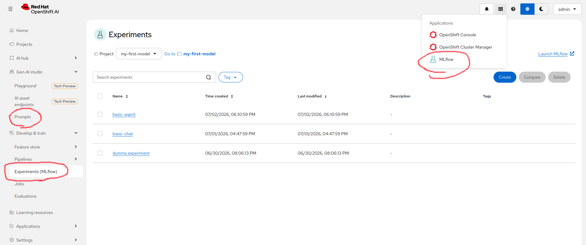

MLflow within Red Hat OpenShift AI
- Objective
-
Understand how MLflow integrates with Red Hat OpenShift AI.
The MLflow Operator and RHOAI
There is an MLflow operator included with Red Hat OpenShift AI (RHOAI), but this operator will not appear in the software catalog or in the list of installed operators managed by the Operator Lifecycle Manager (OLM). The MLflow operator is managed by the RHOAI operator itself.
To deploy an MLflow server, you must perform two actions:
-
Edit the singleton data science cluster resource of your RHOAI instance to enable the MLflow operator by setting its
spec.components.mlflowoperator.managementStatefield toManaged. -
Create an MLflow resource, which configures the database and artifact storage of the MLflow server.
Once the MLflow resource is available, the RHOAI dashboard displays a number of new pages. It also adds more elements to some of its existing pages.

The experiments page, which the previous screenshot shows, is your main user interface to MLflow in RHOAI 3.4. Future releases may provide additional UI integrations, for example in the GenAI studio.
You may notice that some RHOAI dashboard pages are actually iframes that display the body of a page from the MLflow web UI. It is a light integration. Red Hat is an active contributor to the upstream MLflow project.
MLflow workspaces and authentication within OpenShift
The MLflow operator maps Kubernetes namespaces and OpenShift projects (not just AI projects) to MLflow workspaces. For each project in RHOAI, there is an MLflow workspace.
The MLflow operator also configures the MLflow server to delegate authentication and authorization to OpenShift. Any OpenShift user is a valid MLflow user. Such users have access to data in MLflow workspaces based on their RBAC permissions from the respective OpenShift project.
Besides, service accounts with access to resources in a namespace automatically gain access to the MLflow workspace. This means pods running in OpenShift automatically get access to MLflow workspaces. These pods include GenAI studio playgrounds and AI workbenches, including their Jupyter notebooks.
In summary, you manage credentials and permissions to access the MLflow server managed by RHOAI by configuring OpenShift users and standard Kubernetes RBAC. For example:
-
You can enable applications to submit observability data by granting them the
editcluster role on their projects. -
You can enable users to view (but not change) observability data by granting the
viewcluster role on the application project.
Older releases of the MLflow SDK did not include the kubernetes extension, which automatically retrieves the service account token from the running pod and uses it as the MLflow authentication token.
That required using an RHOAI fork of the MLflow SDK, but that extension has been merged upstream since MLflow 3.10.
|
If you must connect to MLflow from an application running outside of its OpenShift cluster, you can take the same user token you would use for access to Kubernetes APIs and use it to authenticate to the MLflow server. External applications connect to the MLflow server using the same route (URL) a web browser uses to access the standalone MLflow web UI.
Development vs. production deployments of MLflow
RHOAI product documentation provides two examples of MLflow resources, one for a development environment, and another for a production environment.
-
The development example runs an in-container SQLite database, which stores data on a PVC attached to the MLflow server pod, and uses the same PVC as its artifact store. You can increase the size of that PVC and you are responsible for backing up data from it, possibly using the OADP API.
-
The production example uses an external PostgreSQL database server and an external S3 object storage service, for example AWS S3 or OpenShift Data Foundation (ODF) from Red Hat OpenShift Plus. You are responsible for providing access credentials and for managing high availability, disaster recovery, and data retention of both the external database and S3 object buckets.
Nothing prevents you from using a managed database service from a cloud provider as your MLflow database. Be aware, however, that RHOAI and its MLflow operator do not manage the relational database and object storage in any way. They just store data there.